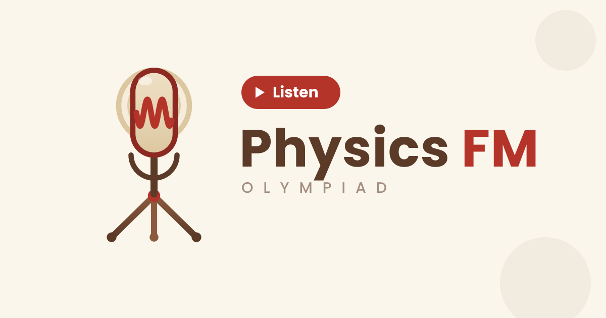

Physics FM — сезонная олимпиада по физике для 7–8 классов. Задачи, разборы и результаты — как программа передач: по расписанию и без помех (почти).

Вчера завершился третий сезон олимпиады по физике для седьмых и восьмых классов от Physics FM. Технические результаты будут доступны через 3–4 дня — в личном кабинете на сайте.
Апелляция пройдёт на следующий день после публикации технических результатов, в формате видеоконференции на платформе КТолк. Ссылка появится в Telegram-канале Physics FM. Решения олимпиады уже доступны на сайте, в разделе «Олимпиада Physics FM».
— Коллектив жюри
Разделы сайта — каналы вещания. У каждого свой позывной и свой цвет.
Кто делает Physics FM и почему это похоже на радио.
Слушать → 94.6Формат, туры и пошаговая инструкция, как попасть в эфир.
Слушать → 97.8Тексты о физике, экранах и помехах — от жюри и авторов.
Слушать → 101.2Подать заявку на участие — займёт пару минут.
Слушать → 104.5Личный кабинет, Google Classroom, апелляция, контакты.
Слушать →